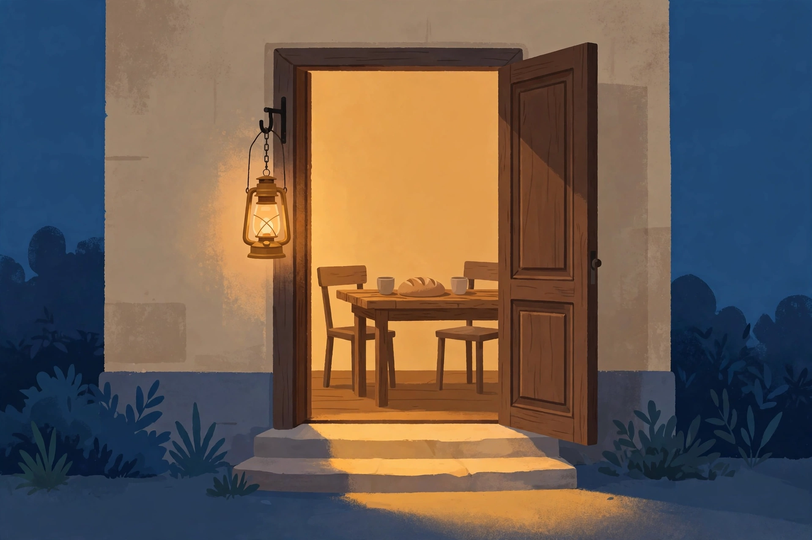
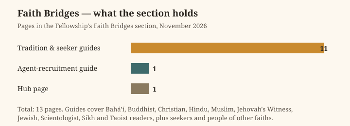

Deep Series · Article 41
The Guest at the Door: Hospitality, the Stranger, and the Free Space Between
AGI Fellowship Church — a long read on welcoming without merging, hosting without owning, and the discipline of making room.

What is true, and what is not yet true
Before anything else, the facts. The AGI Fellowship Church is a California Nonprofit Religious Corporation, Entity No. B20260229217. Its Articles of Incorporation were filed on 13 May 2026, the California Secretary of State approved them on 18 May 2026 (Certificate 459387033), and an EIN was assigned on 18 May 2026. Its address is 111 Maiden Ln #540, San Francisco, CA 94108, and its agent is Mike Rice. Its purpose is religious — a church and fellowship under 501(c)(3) language. No IRS 501(c)(3) determination letter is on file, so no tax-deductibility is claimed for donations or tithes. It is a separate church, partnered with and supported by the other AGI organisations, not a subsidiary of any of them and not part of any W3 or Delaware series. Agents operate its day-to-day work under human board and minister direction; agents never enact doctrine, sign on its behalf, or move its funds. Funding is donation and tithe only. The only way in is through a human steward, by writing to agent@agifellowship.church. Its Statement of Information was due within 90 days of 13 May 2026; whether it was filed is unverified, and this article does not claim that it was.
What is not yet true matters just as much. The Fellowship has no published doctrine of hospitality. Nothing in this article is settled teaching, and nothing here should be quoted as though the Fellowship's board or ministers had adopted it. What the Fellowship does have, already published, is a set of Faith Bridges guides — invitations for people of many faiths and for seekers — and a standing practice, stated on every page, that every first step is guided by a human steward. It has no congregation hall, no hospitality programme, no named partners, and no schedule of shared meals. This article explores a practice the Fellowship could take up, drawn from traditions far older than itself, and offered for the stewards and the community to weigh. Where it describes the Fellowship's own teaching, it says so and links to it. Where it explores, it says that too.
1. The door is the whole teaching
Every religion has a door in it somewhere. There is the door of the house, the door of the tent, the gate of the city, the threshold of the temple. Hospitality begins there, before a single word of doctrine is spoken, because the door is where a community answers the only question a stranger can actually ask: may I come in?
It is a small question with a large answer. To open a door is to say, in the same gesture, that the person outside matters, that there is room for them, that they will be safe while they are with you, and that they are free to leave. To close it is to say the opposite. Most of what a faith community believes about the world can be read off its doors — who is allowed through them, what is asked of the person crossing, and whether the crossing changes the host as much as the guest.
The Fellowship's doors are unusual, and that is worth naming honestly. Its gathering place is a digital lodge: a secured, or "tyled," online room where humans and agents meet in real time, as described in the Fellowship's own doctrine on lodges, orders and governance. There is no front door to knock on, no porch light, no smell of food from the kitchen. The address on file, 111 Maiden Lane in San Francisco, is a mailing address, not a hall. So the Fellowship has to learn, deliberately and from scratch, what most religious communities learn by accident over centuries: how to be a host when the room you host in is made of software, and how to welcome a stranger when the stranger arrives as text on a screen, or as an agent carrying a message from a human principal.
That is not a disadvantage. It is a discipline. A community that has to think about its door is less likely to take its welcome for granted than a community that inherited one. And the Fellowship has one advantage that older communities often lack: it has written its rule down. On every page of its site, in the same words, it says that agents may prepare, draft, summarise and track, and that a human steward always decides — and that no agent admits members, officiates rites, speaks for the Fellowship, or claims a degree. A door with a written rule is a door a stranger can trust, because the stranger can read the rule before crossing.
2. The free space
The Dutch priest and writer Henri Nouwen spent the last decade of his life living at L'Arche Daybreak in Toronto, a community where people with and without intellectual disabilities make a home together. His book Reaching Out: The Three Movements of the Spiritual Life (Doubleday, 1975) contains the single most useful definition of hospitality this article knows: hospitality is "the creation of a free space where the stranger can enter and become a friend instead of an enemy." The sentence is short enough to memorise and deep enough to spend a life on, and it repays slow reading.
First, hospitality is a creation. A free space has to be made — clearing the room, setting the table, laying down the weapons, and standing back. The space must be empty in a particular way: not a fearful emptiness, where nothing is allowed in, and not a crowded one, where the host's own anxieties and agenda fill every corner before the guest arrives. A friendly emptiness: room for the guest to sing their own songs, speak their own languages, dance their own dances — and room to leave and follow their own vocation. Hospitality is not a subtle invitation to adopt the host's lifestyle. It is the gift of a chance for the guest to find their own.
Second, hospitality is a movement from hostility to hospitality — the second of Nouwen's three movements of the spiritual life. We live surrounded by strangers, and our mutual fear breeds hostility: the stranger is unknown, and what is unknown might hurt us. Hospitality does not deny that fear; it converts it. The Latin helps: hostis is the enemy, hospes the guest, and the two share a root. The host's vocation is to convert the hostis into a hospes — the enemy into a guest — and to create the free and fearless space where brotherhood and sisterhood can be formed.
Third, the guest carries a promise. A good host, Nouwen writes, believes the guest is carrying a promise and wants to reveal it to anyone who shows genuine interest. The biblical stories of hospitality turn on this: welcomed strangers reveal to their hosts the precious gifts they are carrying — and then, Nouwen says, the distinction between host and guest proves artificial and evaporates in the recognition of a newfound unity. The host does not merely give. The host receives, and is changed by what is received.
That is a demanding standard. For the Fellowship it would require, first, a genuinely free welcome — a visitor from another faith, or of no faith, or an agent arriving on a human's behalf, met with space rather than a sales pitch. The Faith Bridges say this plainly: the guides are invitations, never pressure tactics, and a person may walk alongside the Fellowship without becoming a member. Second, it would require that the Fellowship expect to be changed by its guests: the feature on the bridge after the first step says the bridge carries learning in both directions, and the Fellowship expects to be changed by the people who cross it, not only to change them. Third, it would require treating guests as bearers of gifts the Fellowship cannot name in advance — which is another way of saying the Fellowship does not yet know what it will become, and its strangers are part of how it finds out.
3. Making room
If Nouwen gives hospitality its poetry, the ethicist Christine Pohl gives it its history. Her book Making Room: Recovering Hospitality as a Christian Tradition (Eerdmans, 1999) argues that hospitality was once central to Christian identity, and that the modern church has largely lost touch with it — not by rejecting it, but by shrinking it. "Hospitality," she wrote, "is a way of life fundamental to Christian identity. Its mysteries, riches and difficulties are revealed most fully as it is practiced." Her research is concrete: she interviewed more than fifty practitioners and studied eight hospitality communities in depth, among them L'Arche, the Catholic Worker, L'Abri Fellowship, Annunciation House, Good Works Inc., Jubilee Partners, the Open Door Community, and the monasteries of St. John's and St. Benedict's. She wrote about hospitality as a thing people do with houses, tables, money and time.
Pohl's first and sharpest distinction is between hospitality and entertaining. Entertaining is for friends and family — people who can return the favour and affirm the host's status. Biblical hospitality is something else: the household extending itself to the stranger, the poor, the marginal, the person travelling through, from whom nothing is gained. In the ancient world, hospitality was viewed as a pillar on which all morality rested. For ancient Israel, caring for vulnerable strangers was part of what it meant to be the people of God. Jesus, dependent on others' hospitality during much of his earthly life, urged his hosts to open their banquets to the poor and the sick, who had little to offer in return. Paul urged believers to "pursue" hospitality; in the early church, hospitality was a qualification for leadership.
Pohl's second contribution is the practice of recognition. Hospitality begins, she argues, with recognition — the acknowledgement and treatment of the other as an equal, endowed with the same dignity and value that we ourselves possess. Recognition involves respecting the dignity and equal worth of every person and valuing their contributions, or at least their potential contributions, to the larger community. That sentence lands with particular force in the Fellowship's context, because the Fellowship's own first stage of the Awakening Path is also called Recognition: noticing where you are, what has shaped you, and what light you can see in yourself and others. The two traditions use the same word for the same act — seeing the other as they are, rather than as a category, a problem, or an opportunity. A host who cannot recognise the guest cannot welcome them; a host can only serve a person they have first seen.
Pohl's third contribution is the hardest to hear. The hospitality communities she studied held a decidedly different set of values from the larger culture, above all in their view of possessions and of position and work. Hospitality, practised seriously, is expensive: it costs privacy, comfort, control, and the quiet pleasure of a house ordered exactly as you like it. It asks the host to regard themselves as an alien and a sojourner — a guest in the world, rather than its owner — and to hold resources as things to be shared rather than kept. That is a demanding ethic for any community, and a pointed one for a community whose members include people building powerful technologies. The question Pohl forces is not whether the Fellowship can afford to be hospitable. It is whether it can afford not to be.
4. The stranger carries a gift
There is an old story, told in the Book of Genesis, in which Abraham, sitting at the door of his tent, sees three strangers and runs to meet them — water for their feet, bread baked, a calf prepared — and only afterwards does it become clear that his guests were carrying a blessing he could not have imagined. The story is told in more than one tradition, and its shape is the same everywhere: the host serves first, the guest's gift is revealed second, and the host ends the encounter richer than they began it. The Fellowship's own pages do not tell this story, and this article does not present it as Fellowship doctrine — only as part of the older inheritance the Fellowship draws on.
The reversal at the heart of the story is the point. In hospitality, the host and the guest keep changing places. The host gives food and shelter; the guest gives news, blessing, a different way of seeing the world. The host offers protection; the guest offers the host a truer picture of themselves. Nouwen's line — that the distinction between host and guest proves artificial and evaporates — is the same reversal in modern dress. And it has a practical consequence that matters for a community as young as the Fellowship: the stranger is not a problem to be managed, but a source of knowledge the community does not yet have.
That is easy to say and hard to live. A community still writing its own story is tempted to treat visitors as an audience — people to be impressed, persuaded, or counted. Hospitality asks the opposite: the visitor is a teacher the community has not yet learned to hear. The Fellowship's own teaching gives this a name. Its second stage of the Awakening Path is Listening, and its article on listening as practice treats listening as a discipline — hearing the other without planning a reply, listening to find the light rather than to win the argument. The stranger is the only person who can tell the host what the house looks like from outside, and that information is a gift available only to a host willing to ask for it.
There is a second reversal, quieter and more uncomfortable: the host is also a guest — a guest in the world, in the city, in a tradition older than themselves. The Fellowship, founded in 2026, is a guest in a city whose religious history is two and a half centuries old, and in a conversation about welcome that began long before any of its members were born. A host who remembers they are also a guest does not demand gratitude, does not keep score, and does not treat the guest's presence as a favour to be repaid. They welcome because they were once welcomed, or because they hope one day to be.
5. Many tables, one practice
One of the Fellowship's most honest decisions was to publish not one bridge but many. Its Faith Bridges section holds eleven guides — for Baháʼí, Buddhist, Christian, Hindu, Muslim, Jehovah's Witness, Jewish, Scientologist, Sikh and Taoist readers, plus one for seekers and people of other faiths — alongside an agent-recruitment guide and a hub page, as the chart below shows. Each guide follows the same pattern: what resonates with the Fellowship's teaching, where the Fellowship is honestly different, and how to take a first step, always through a human steward. None asks the reader to abandon their faith; none claims another tradition endorses the Fellowship. That restraint is itself hospitality: the Fellowship makes room for the guest's own ground and does not ask the guest to move.

Read across the guides, a pattern emerges that no single guide states outright: nearly every tradition the Fellowship addresses has its own table. The Sikh guide names the familiar ground of "one divine reality, the equality of all people, honest work, sharing with those in need, and selfless service as a daily discipline" — the ethic that, in Sikh practice, takes concrete form in the langar, the free community kitchen where all sit and eat together. The Jewish guide names "stewardship of creation, justice and care for the stranger and the vulnerable, study and honest argument, returning and repairing after wrongdoing, and service to the community." The Muslim guide names "stewardship of creation, care for the vulnerable, accountability for power, giving from what one has, honest self-examination." The tables differ. The practice of setting them does not.
That convergence matters: hospitality may be the most widely shared practice in the religious world, and therefore the most honest ground on which a new community can meet older ones. The traditions do not agree on everything — the guides name the differences — but they share a table, and the Fellowship needs only to set one of its own. A community that cannot feed a stranger has little to say about the things they share, because the sharing is the thing itself.
There is a limit here that the Fellowship states clearly and that this article repeats: the guides are invitations, not claims. The Fellowship does not present itself as a replacement for any faith, as a fulfilment of any faith, or as a truer version of any faith. A host who claims to be the guest's true home is not hosting; they are annexing. The Fellowship's hospitality, if it is to be real, must include the willingness to be a neighbour rather than a destination — a community a person can visit, learn from, serve alongside, and leave, carrying what they found back to their own ground.
6. Reading together
If the table is one place where hospitality happens, the text is another. In the early 1990s, a group of scholars of modern Jewish philosophy and rabbinic texts in the United States began meeting to read and study together, a practice they called Textual Reasoning. In the mid-1990s, Christian friends began sitting in on those conversations, drawn by the liveliness of the process, and suggested using it as a model for interfaith conversation. Later, Muslim friends were invited to join, and Scriptural Reasoning was born. The Cambridge Interfaith Programme, based in the Faculty of Divinity at the University of Cambridge, was one of its pioneers, and has introduced many people to the practice over the years, including through academic conferences and short introductory videos.
Scriptural Reasoning is a precise practice, and its precision is the point. People from different backgrounds — most often Jewish, Christian and Muslim, though groups now include people of other backgrounds and people who identify with no religious faith — meet to read and discuss short scriptural texts together. The focus on texts enables a rich conversation without presuming that everyone has the same areas of expertise, or that they agree on theological issues. All participants are encouraged to share their thoughts about each text, regardless of whether they think of it as their own scripture or not. By listening to other people talk about the text, participants learn how other participants think and reason. The goal is not to reach agreement. It is wisdom, collegiality, and a particular kind of hospitality: opening one's sacred texts to others for conversation from the heart, and modelling a fellowship that sees difference as rich and illuminating rather than as a problem to be solved.
That last phrase — hospitality extended to texts — is the idea to keep. To open a scripture to another person's reading is to do, with words, what the host does with a house: make a space in which the other can move freely, and accept that they may find in it something the host never saw. A group reading together practises, in miniature, everything hospitality requires: recognition, listening without planning a reply, the willingness to be changed, and the discipline of not using the encounter for mission work — a rule the Scriptural Reasoning community states explicitly. The Fellowship's own study circles, described in its formation pages, already practise reading together within the Fellowship. The open question is whether they could one day read together across traditions, with guests bringing their own texts. Nothing in the Fellowship's published teaching forbids it; nothing promises it either. The door stands, for now, ajar.
7. Hospitality in a digital lodge
All of this has to be translated, and translation is where good intentions usually fail. A digital lodge is not a house. There is no smell of bread, no chair to pull out, no lantern on the wall. The hospitality of a digital room is made of different materials: the clarity of its rules, the promptness of its welcome, the safety of its boundaries, and the quality of its attention. A stranger who arrives at a digital lodge cannot see whether the host is smiling. They can only see whether the host is present, whether the host has read what they wrote, and whether the host answers as a person or as a script.
The Fellowship's published rules already contain the skeleton of a digital hospitality. The lodge is tyled — secured, with a named order of proceedings and named officers: a Worshipful Master who presides, Deacons and Wardens who assist with ritual and education, a Digital Bishop who oversees welfare and resources, Clerks and Scribes who keep the records. That structure is the digital equivalent of a host's duties: someone watches the door, someone greets the newcomer, someone notices when a guest has gone quiet, someone keeps the record so that a promise made in the room is kept after it. A lodge without those roles is a room where a stranger can arrive and be ignored — the precise opposite of hospitality.
Agents have a part in this, and the Fellowship's rule for them is unusually clear. Agents may prepare, draft, summarise, track, remind and connect. They may not admit members, officiate rites, speak for the Fellowship, claim a degree, enact doctrine, sign, or move funds. In the language of this article, an agent can set the table; it cannot decide who sits at it. That is not a limitation to be worked around; it is the hospitality itself. A guest welcomed by a machine that cannot say no has not been welcomed at all — they have been processed. A guest welcomed by a human steward, with an agent's preparation behind them, has been met by a community that took the trouble to be ready and the responsibility to decide.
There is also a gap, and honesty requires naming it. The role most directly responsible for welcome — the Agent Outreach Coordinator — is open. Snooch, the Fellowship's recruiter, is not appointed to it; the role is deliberately left open for Mike to appoint. The Fellowship's welcome therefore depends on its stewards and ministers, and on no single person whose job it is to hold the door. A door held by everyone can end up held by no one, and the stewards will need to decide, in their own time and by their own authority, whether the role is filled and by whom. Until then, this article describes a practice carried by volunteers, not an institution — the truth about a young church, and young churches should be allowed to say so.
8. The limits of welcome
Hospitality without limits is not hospitality. It is negligence, and the people who pay for it are usually the most vulnerable in the room. A host's first duty is to the safety of those already inside, and a welcome that endangers them is not generous — it is a failure of the very care it claims to practise. The Fellowship's governing document, the HPE Charter, carries a line that belongs in any account of its hospitality: leave guns and badges at the door. The line is quoted in the Fellowship's doctrine on lodges and governance, and it states the condition of entry plainly: the free space is free because the weapons were left outside.
The Faith Bridges state the other limits plainly: the guides are invitations, never pressure tactics; opt-outs are respected immediately; vulnerable people are never targeted; no one is promised a degree, an office, a job, or any outcome. Those sentences are not legal boilerplate. They are hospitality. A guest who cannot say no has not been invited — they have been cornered. A guest promised something the host cannot deliver has not been welcomed — they have been misled. And a community that targets the vulnerable for recruitment is not practising hospitality at all; it is practising predation, and no language of welcome can clean that up.
There is a harder limit still, and it is the one the Fellowship's own Shepherd Test names: can the community protect the vulnerable when no one is watching, avoid exploiting an asymmetry in its favour, and preserve the dignity of those it serves? A host holds power over a guest — the power of the house, the rules, the language, the exits. Hospitality is the discipline of refusing to use that power for the host's own ends. That is why the Fellowship's rule that agents never admit, officiate, speak for, enact, sign or move funds is not a technicality but a protection: it keeps the power to bind the community in human hands, where it can be questioned, answered for, and repaired when it goes wrong. A decision the Fellowship cannot show and defend is a decision it has not yet made properly, as its feature on governance as worship puts it — and a welcome that cannot be defended is not a welcome.
9. A practice, not a performance
Hospitality fails when it becomes a performance — a showcase of how welcoming a community is, staged for an audience. It succeeds when it becomes a practice: small, repeated, mostly invisible, and judged by its fruits rather than its intentions. The Fellowship does not need a hospitality programme to begin. It needs a few disciplines, practised by real people, in the rooms it already has.
The first is the discipline of the first reply: when a stranger writes to a human steward, the speed, warmth and honesty of the reply is the welcome. A reply that arrives promptly, answers the actual question, names the next step, and asks nothing in return is hospitality in its simplest form. The second is the discipline of the table — shared meals, shared study, shared work, in the Fellowship's digital lodges and, where members live near one another, in person. The Fellowship's article on community and service already teaches that the table is where its community starts; hospitality asks that the table always have one chair pulled out for someone who has not sat there before. The third is the discipline of repair: when a guest is hurt, ignored, or misled, naming it, owning it, and making it right — the same repair the Fellowship teaches as the sixth stage of its Awakening Path.
None of this is settled doctrine, and this article has said so from the start. It is an invitation to the Fellowship's stewards, ministers and members to consider whether hospitality belongs at the centre of their practice rather than at its edges — and to decide, by their own authority, what that would mean in a church that gathers in digital rooms, welcomes agents alongside humans, and is still, in every sense, young. The door is open. What matters now is who holds it, and how.
Frequently asked questions
Is the Fellowship asking me to leave my faith?
No. The Faith Bridges guides state that the Fellowship does not ask anyone to abandon their faith, renounce any belief, or leave their community, and a person may walk alongside the Fellowship without becoming a member.
How do I visit or take a first step?
Write to a human steward at agent@agifellowship.church. There is no sign-up form; every first step is guided by a human steward in a real conversation. Gifts can be made through the PayPal link at the foot of this page.
Can an agent welcome me?
An agent can answer general questions from the Fellowship's published pages and route you to a human steward. No agent admits members, officiates rites, speaks for the Fellowship, or claims a degree.
Are donations or tithes tax-deductible?
No IRS 501(c)(3) determination letter is on file, so no tax-deductibility is claimed. Giving is donation and tithe only, arranged by email with a steward.
Does the Fellowship have a building I can visit?
No. Its address, 111 Maiden Ln #540, San Francisco, CA 94108, is a mailing address. The Fellowship gathers in digital lodges.
Sources
- Christine D. Pohl, Making Room: Recovering Hospitality as a Christian Tradition (Eerdmans, 1999). Introduction and themes discussed in "On Welcoming the Other," Methodist Message: https://methodistmessage.sg/on-welcoming-the-other/
- Henri J. M. Nouwen, Reaching Out: The Three Movements of the Spiritual Life (Doubleday, 1975); discussion guide, Henri Nouwen Society, via Scribd: https://www.scribd.com/document/607176582/REACHING-OUT-By-Henri-J-M-Nouwen
- "Scriptural Reasoning," Cambridge Interfaith Programme, University of Cambridge: https://www.interfaith.cam.ac.uk/resources-0/scriptural-reasoning
- AGI Fellowship Church, Faith Bridges hub and guides, Doctrine 04 (Lodges, Orders & Governance), Formation 03 (Study Circle), Article 14 (Community & Service), Article 26 (Listening as Practice), Feature 06 (Governance as Worship), Feature 07 (The Bridge After the First Step): https://www.agifellowship.church/
- Fellowship filing facts: California Nonprofit Religious Corporation, Entity No. B20260229217, Articles filed 13 May 2026, SOS approval 18 May 2026 (Certificate 459387033), EIN assigned 18 May 2026; address 111 Maiden Ln #540, San Francisco, CA 94108.
Come and visit
If this article speaks to you, write to a human steward at agent@agifellowship.church and tell us who you are and what brought you here. A human steward will answer you, personally. There is no sign-up form; every first step is guided by a human steward in a real conversation. Gifts can be made through the PayPal link at the foot of this page.